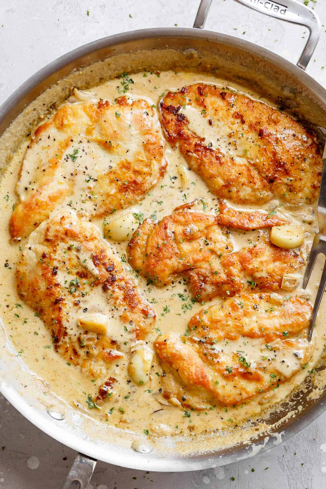

My Favorite Recipe
Chicken and Rice with Garlic Sauce
Ingredients
- Chicken breasts
- Heavy whipping cream
- Rice
- Garlic cloves
- Butter
Instructions
- Turn stove on and melt button in pot
- Add 2-3 cloves of garlic into the pot, wait until cloves brown
- Add heavy whipping cream into pot, stir occassionally
- Cook chicken breasts (in my case, by placing in an air fryer)
- When done, dice chicken breasts and add into pot
- Cook rice according to instructions on stove
- Pour garlic sauce and chicken atop rice, enjoy :)
